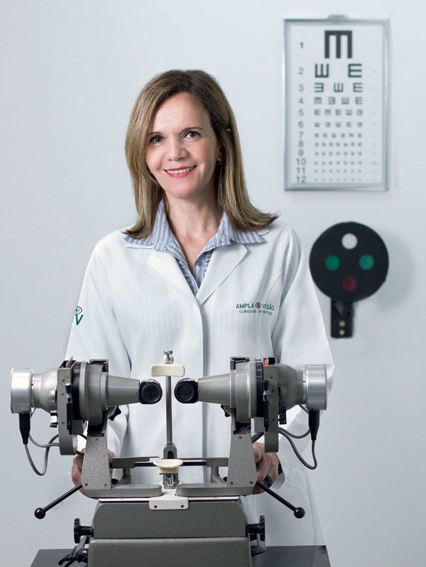

| NOME: Sandra Aparecida S. Rodrigues | |
| IDADE: 49 anos | |
| TEMPO DE PROFISSÃO: 28 anos | |
| FORMAÇÃO: Ortóptica | |
| O QUE FAZ: Ajudaa corrigir desequilíbrios da visão, como o estrabismo, usando exercícios para os olhos |
Nem todos os problemas de visão são originados da miopia, astigmatismo ou hipermetropia. Alguns dos desequilíbrios podem ser causados por danos nas funções neurológicas ligadas à visão. Quem teve umacidente vascular cerebral, tem hipertensão, diabetes ou sofreu um trauma no crânio pode desenvolver, por exemplo, estrabismo — a dificuldade em manter os olhos paralelos.
Para isso serve o ortoptista. Uma vez identificado o problema pelo oftalmologista, é esse o profissional que entra em ação. Seu objetivo é usar estímulos físicos e mentais para que os olhos voltem a funcionar. Não é exagero dizer que ele é uma espécie de “personaltrainer” dos olhos.
Formada pela única faculdade que tem o curso de ortóptica (Instituto Brasileiro de Medicina e Reabilitação, no Rio), Sandra explica: “Os olhos querem trabalhar em sincronia. Mas, às vezes, por fatores externos, são impedidos. Quando a gente coloca um tampão para resolver o problema, tampa a visão do olho bom e, rapidamente, o ruim começa a voltar a trabalhar sozinho”.
Temido pelas crianças, o tampão consegue resolver a maioria dos problemas ortópticos delas. Em adultos, que têm o corpo totalmente desenvolvido, a preferência é pelos exercícios. Eles funcionam como uma terapia gradativa, treinando ao mesmo tempo as partes muscular e neurológica da visão. Existem inúmeros tipos e variações. Em um deles, um software é utilizado para colocar os olhos do paciente de novo “em forma”. A pessoa usa uma espécie de óculos 3D, que neutraliza as cores vistas pelo olho “bom” e passa a forçar o ruim a trabalhar.
O tempo de tratamento também varia. Há casos de crianças que precisam de cinco anos de tratamento e outros em que 10 seções de 40 minutos são o suficiente.